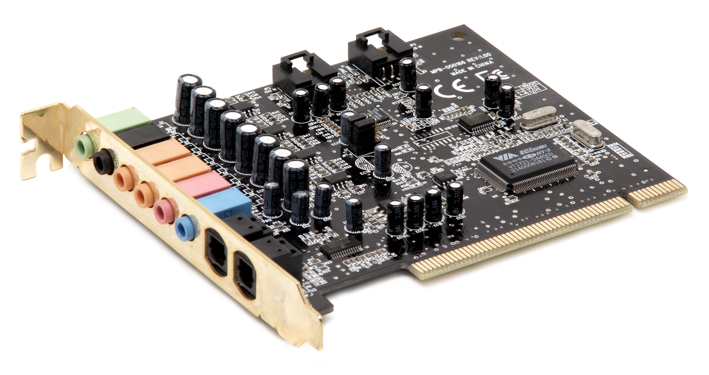
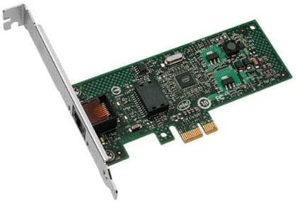
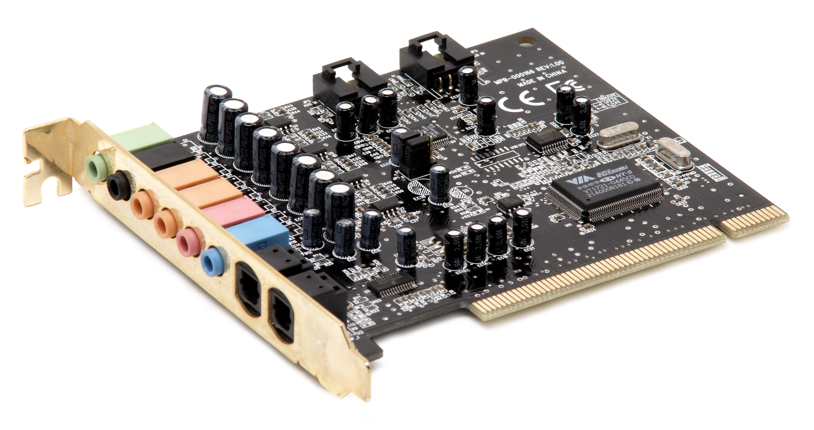
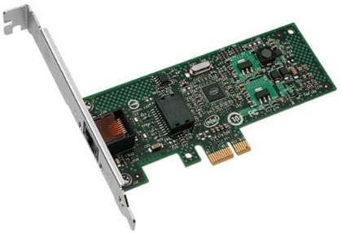

What are expansion cards?
Expansion cards also known as(expansion board, adapter card or accessory card) is a printed circuit board that can be inserted into an electrical connector, or an expansion slot, on a computer motherboard.An expansion bus provides an input/output pathway for transferring information between internal hardware, such as RAM or the CPU, and expansion devices such as a graphics card or sound card.
Purpose
The purpose of an expansion card is to provide or expand on features not offered by the motherboard. For example, the original IBM PC did not have on-board graphics or hard drive capability so a graphics card and an ST-506 hard disk controller card provided graphics capability and hard drive interface respectively. Some single-board computers made no provision for expansion cards, and may only have provided IC sockets on the board for limited changes or customization. Since reliable multi-pin connectors are relatively costly, some mass-market systems such as home computers had no expansion slots and instead used a card-edge connector at the edge of the main board, putting the costly matching socket into the cost of the peripheral device. In the case of expansion of on-board capability, a motherboard may provide a single serial RS232 port or Ethernet port. An expansion card can be installed to offer multiple RS232 ports or multiple and higher bandwidth Ethernet ports. In this case, the motherboard provides basic functionality but the expansion card offers additional or enhanced ports.
History
The first commercial microcomputer to feature expansion slots was the Micral N, in 1973. The first company to establish a de facto standard was Altair with the Altair 8800, developed 1974–1975, which later became a multi-manufacturer standard, the S-100 bus. Many of these computers were also passive backplane designs, where all elements of the computer, (processor, memory, and I/O) plugged into a card cage which passively distributed signals and power between the cards.
Here are some examples of expansion cards:
- Video card
- Sound card
- Network card
- Interface card
- Modem
- Video capture card